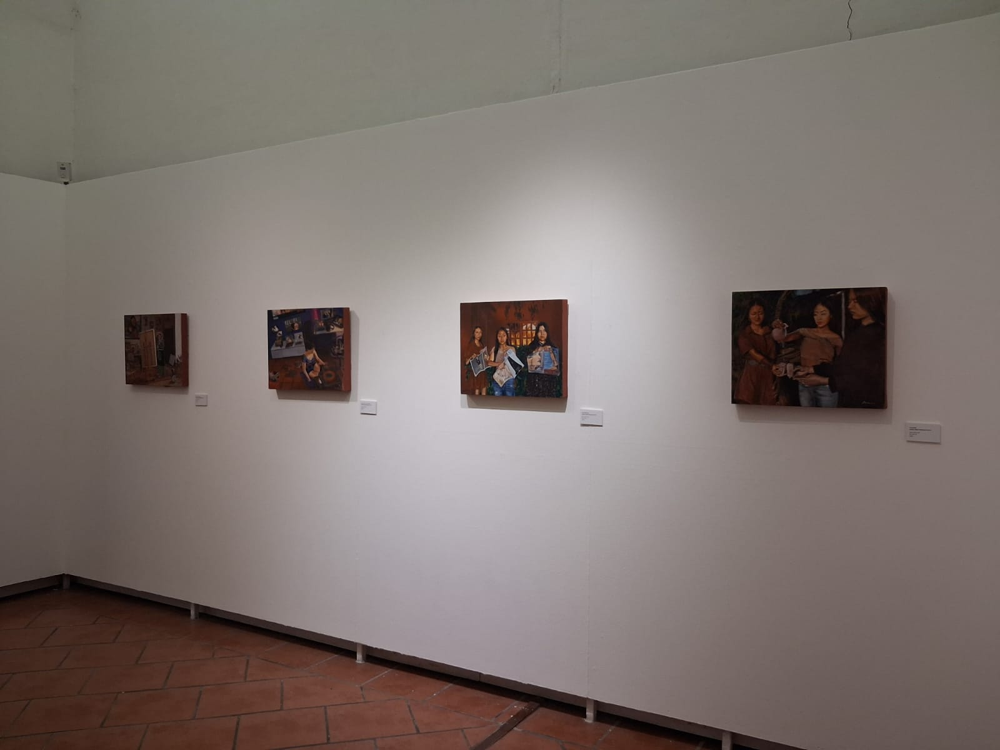
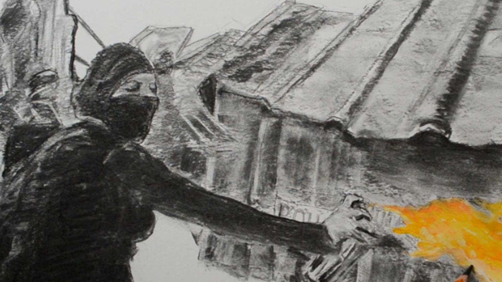
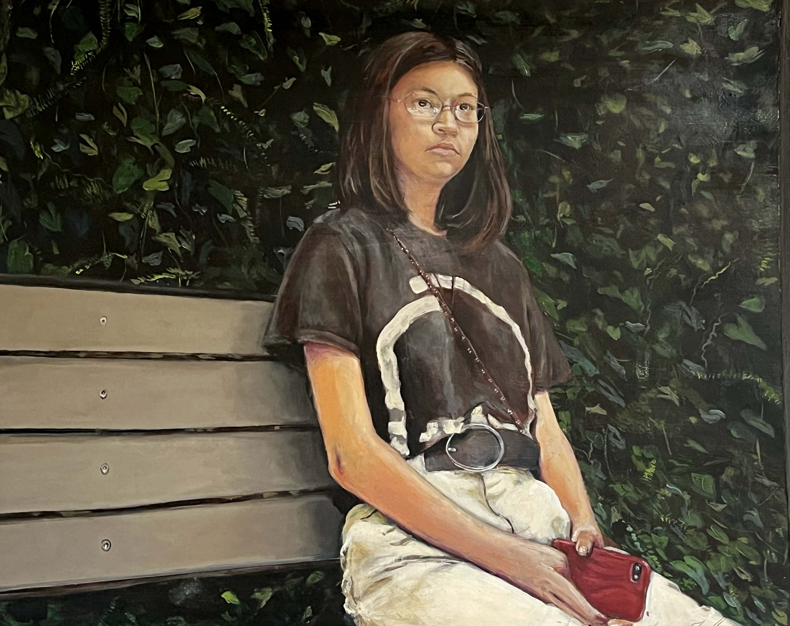
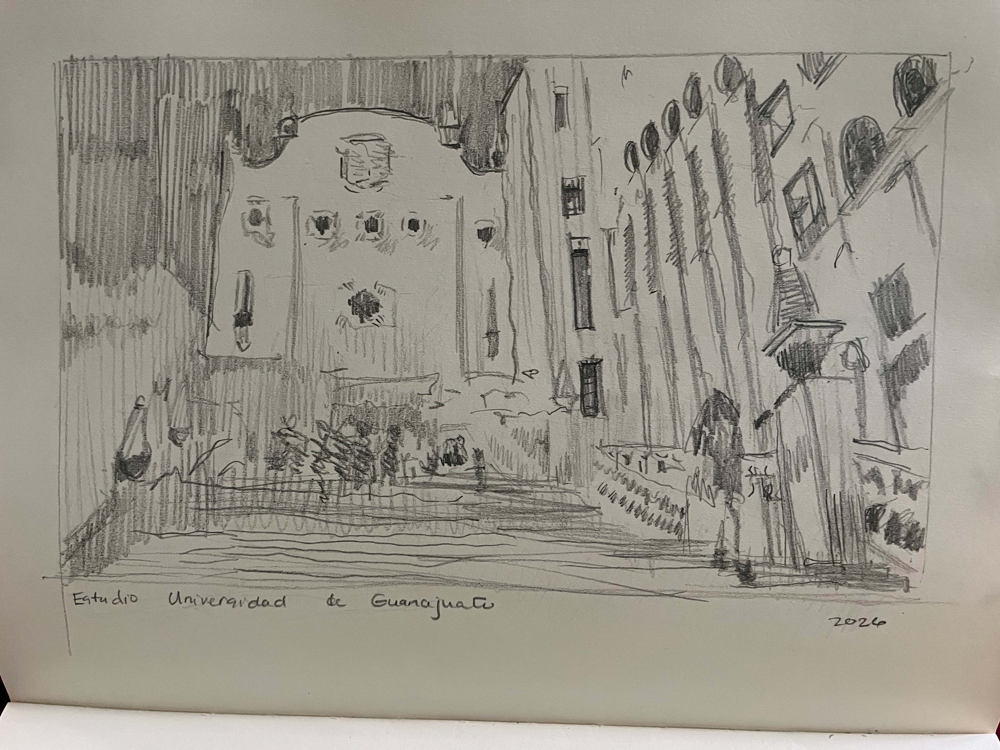

01
Territorio de batalla
Pintura figurativa y técnica veneciana sobre cuerpo, autonomía, feminidad y resistencia.
Pintura · Gráfica · Cerámica
Una práctica figurativa que recupera el cuerpo femenino como territorio político, espacio de memoria y lugar de resistencia.
Conocer la obraPráctica artística
San Miguel de Allende, México
Indhira desarrolla una obra figurativa centrada en la experiencia de las mujeres, la construcción cultural del cuerpo, la memoria colectiva y la relación entre identidad y territorio.
Su pintura recupera procedimientos históricos —como la grisalla, las veladuras y la técnica veneciana— para confrontar problemáticas contemporáneas desde una imagen precisa, simbólica y profundamente material.
Proyecto actual
Serie realizada mediante técnica veneciana que examina el cuerpo femenino como un territorio disputado por la mirada, la medicina, la moda, la ideología y el poder.
El proyecto reúne pintura, investigación escrita y memoria de proceso para construir una reflexión visual sobre autonomía, comodidad, desobediencia y resistencia.
Descargar dossierObra seleccionada
Una selección de proyectos desarrollados mediante pintura, dibujo, grabado y procesos vinculados con la memoria y la representación.

Pintura figurativa y técnica veneciana sobre cuerpo, autonomía, feminidad y resistencia.

Retratos de sororidad construidos a partir de historias, encuentros y redes afectivas entre mujeres.

Retratos al óleo concebidos como obras irrepetibles: presencia, carácter, memoria y continuidad familiar.

Obra sobre papel que registra arquitectura, paisaje urbano, migración, memoria comunitaria y vida cotidiana.
Declaración de artista
Pinto porque la imagen todavía puede disputar aquello que la cultura presenta como natural. Mi obra recupera el cuerpo femenino como territorio político, pero también como experiencia vivida, memoria, materia y presencia.

Biografía
Indhira es una artista visual mexicana nacida en Monclova, Coahuila, y radicada en San Miguel de Allende, Guanajuato. Su práctica comprende pintura, dibujo, gráfica y cerámica.
Es licenciada en Diseño Gráfico y desarrolló durante una década su formación artística con el maestro Tomás Silvestre en el Taller Puerta Morada. También realizó estudios de posgrado en Desarrollo Cultural en la Universidad Autónoma de Coahuila.
Participó en una residencia artística en la Escuela Adolfo Prieto de CONARTE y en el Taller Experimental de Gráfica de La Habana. Su trabajo ha sido exhibido en espacios culturales de Coahuila, Guanajuato y otras ciudades de México.
Entre sus proyectos se encuentran Jacarandas. Retratos de sororidad y Territorio de batalla. En defensa del cuerpo femenino, desarrollado con apoyo del Programa de Estímulos a la Creación y Desarrollo Artístico.
Museo Coahuila y Texas, Monclova
Centro Cultural Ignacio Ramírez El Nigromante
Casa del Diezmo, Celaya
Chamacuero Cultural Center, Comonfort
Licenciatura en Diseño Gráfico
Taller Puerta Morada
Escuela Adolfo Prieto, CONARTE
Taller Experimental de Gráfica de La Habana
Obra por encargo
Cada retrato se desarrolla como una obra única, a partir de una conversación inicial, selección de imágenes, propuesta visual, bocetos y ejecución mediante procedimientos tradicionales al óleo.
Solicitar información